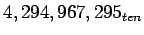
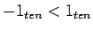
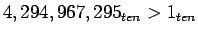

สมมุติให้ค่าในรีจีสเตอร์ $s0 มีค่าไบนารี่เท่ากับ
1111 1111 1111 1111 1111 1111 1111 1111
และในรีจีสเตอร์ $s1 มีค่าไบนารี่เท่ากับ
0000 0000 0000 0000 0000 0000 0000 0001
จงแสดงค่าผลลัพธ์ในรีจีสเตอร์ $to และ $t1 หลังจากการทำงานของคำสั่งดังต่อไปนี้
slt $t0, $s0, $s1 # signed comparison sltu $t1, $s0, $s1 # unsigned comparison
ค่าใน $s0 จะมีค่าเท่ากับ -1 ในกรณีที่เป็นเลขจำนวนเต็ม และมีค่าเท่ากับ  กรณีที่เป็นเลขจำนวนเต็มบวก และ$s1 จะมีค่าเท่ากับ 1 ทั้งสองกรณี เพราะฉะนั้น ค่าในรีจีสเตอร์ $t0 จะมีค่าเท่ากับ 1 เนื่องจาก  และ ค่าในรีจีสเตอร์ $t1 จะมีค่าเท่ากับ 0 เนื่องจาก 
ในการแปลงค่าระหว่างเลขบวก และ เลขลบ สำหรับระบบเลข 2's สามารถทำได้ง่ายๆ โดยการสลับบิต 0 ให้เป็น 1 และ 1 ให้เป็น 0 (Invert bit) จากนั้นทำการบวกหนึ่งเข้าไปดังตัวอย่างต่อไปนี้